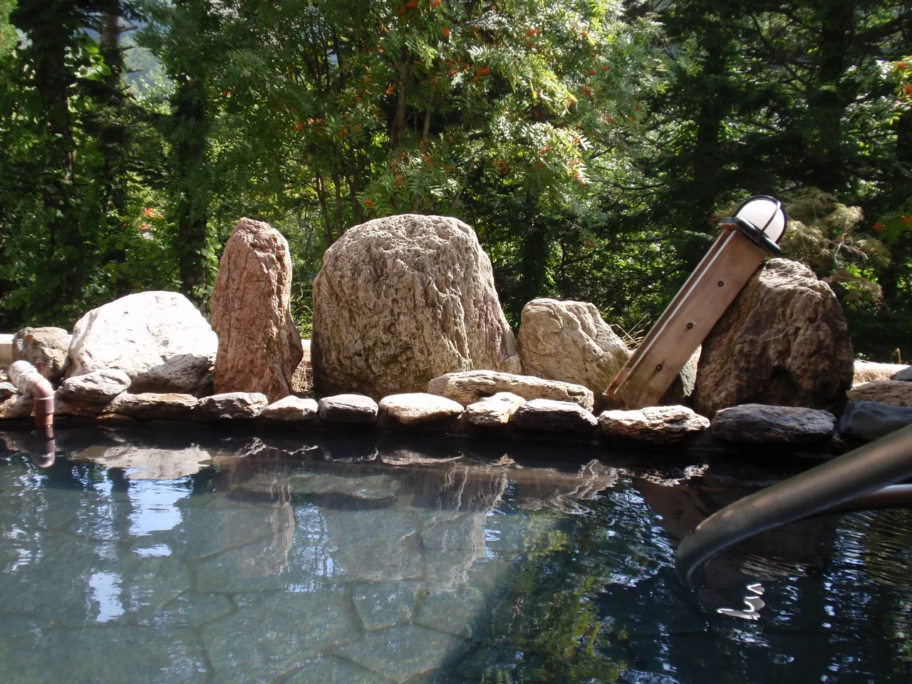
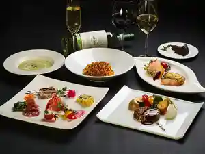
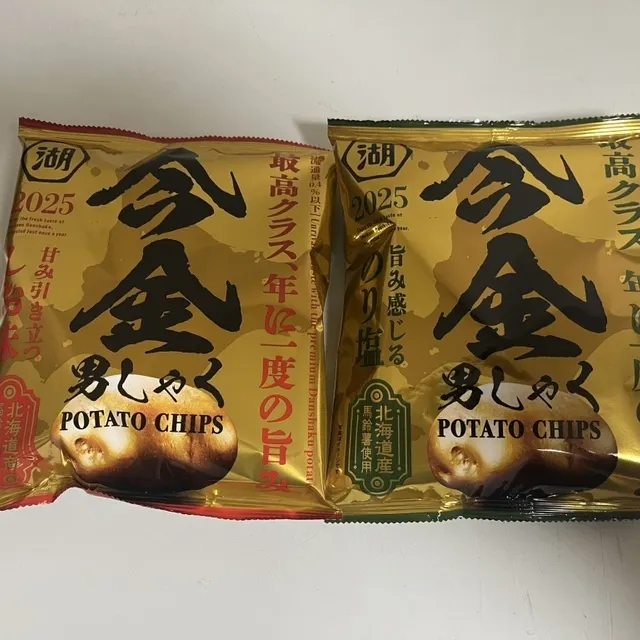
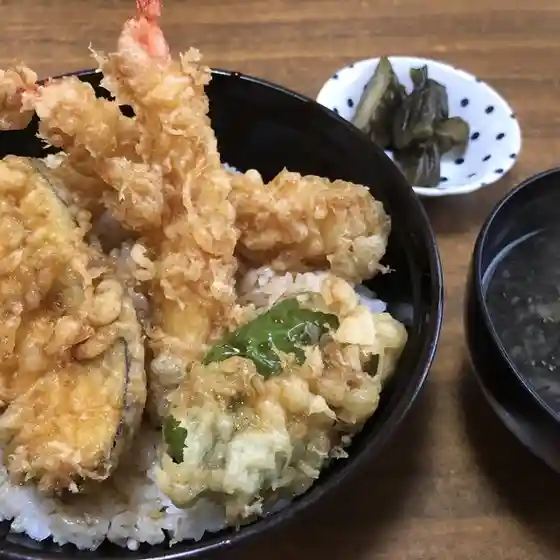
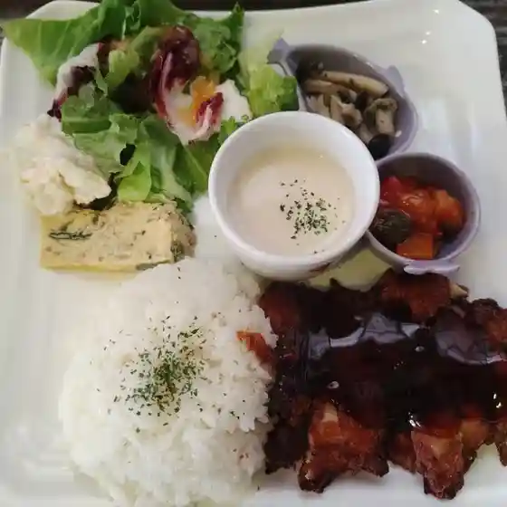
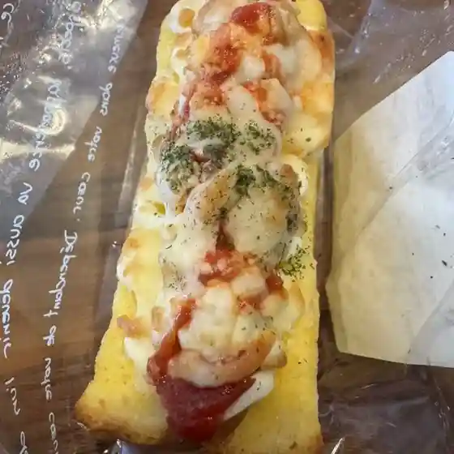
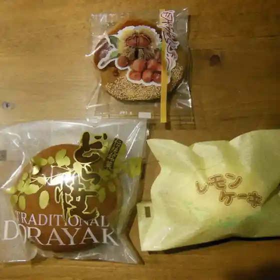
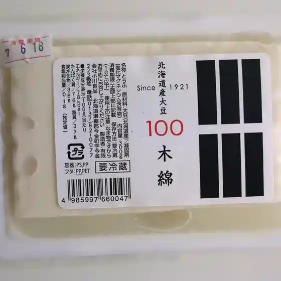

Imakane
Imakane · Hokkaido
Imakane
Highlighted on the Hokkaido map.

Stay
クアプラザピリカ

Kuapurazapirika
Dining
神保食堂

Jinbo Shokudou
Aコープ いまかね店

A Koopu Imakane Mise
喰いどころ和しょく 田なか

Kui Dokoro Washi Yoku Ta Naka
まるびし旅館

Marubishi Ryokan
ピアシェ

Piashie
ひだまり

Hidamari
螺良屋菓子店

Tsubura Ya Kashi Mise
小川食品

Ogawa Shokuhin
和・旬・彩 肴
Wa Jun Sai Sakana
由浅食堂
Yu Sen Shokudou
喜楽食堂
Kiraku Shokudou
居酒屋 菅鮮
Izakaya Kan Sen
さくま旅館
Sakuma Ryokan
どんぐりの木
Dongurino Ki
君ちゃんラーメン
Kun Chan Raamen
ばろん
Baron
小西豆腐店
Konishi Toufu Mise
石田屋
Ishida Ya
軽食喫茶風香
Keishoku Kissa Fuuka
せんなり
Sennari
八千よ
Hassen Yo
シゼントトモニイキルコト
Shizentotomoniikirukoto
赤とうがらし
Aka Tougarashi
カフェ ポンポンチセ
Kafe Ponponchise